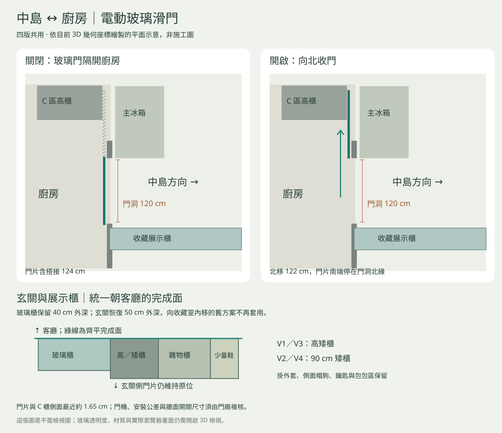

最新：版本精簡與主浴位置修正
歷史檢視紀錄：下文 V1–V4 為調整當時編號；目前僅保留原 V2→新 V1、原 V3→新 V2。
查看目前版本。
2026-09-10 · W 夢想之家
後續外觀巡查又找到材質與幾何缺漏。請看最新12區全屋設計檢視；以下為較早的門、支承及控制檢查。
廚房玻璃門補齊，玄關櫃面接續對齊
四版均已修改。中島設備仍朝冰箱開口，外側補上封板；收藏玻璃櫃保留40cm外深，玄關櫃完成面回到同一條線。
重新整理3D後，按上方「開啟廚房玻璃門」。步行底列亦有開關，也可對準門片或牆面按鈕按 E。玻璃門開啟時向北收，不占中島方向的通道。

同時修正的模型缺漏
- 床架、桌腳、椅輪、影音櫃、廚房設備櫃與飲水機的支承補齊。
- 中島外側看不到設備機背；進入櫃內透明檢視時會顯示提示。
- 移除與可動窗簾重疊的舊窗簾，補吊鉤並降低軌道避梁。
- 客廳東侧RGB燈條移到梁內側；兩房各五種效果與六組窗簾開關都已測試。
四版檢查結果
| 版本 | 網格 | 視點 | 門行程 | 窗簾 | RGB |
|---|
| V1 | 1879 | 13 | 通過 | 6 組 | 2 房 × 5 種 |
| V2 | 1877 | 13 | 通過 | 6 組 | 2 房 × 5 種 |
| V3 | 1930 | 13 | 通過 | 6 組 | 2 房 × 5 種 |
| V4 | 1928 | 13 | 通過 | 6 組 | 2 房 × 5 種 |
驗證範圍
使用實際Three.js模型與控制程式做離線幾何和互動檢查，包含步行通過門口、關門阻擋及防夾退回。每版24件設備與旋轉電視另外做尺寸／碰撞核對。
瀏覽器實畫驗收尚未完成；離線測試不包含GPU畫面、貼圖載入和真實點擊體驗。門機、收門公差、安裝固定及安全装置仍需門廠確認，整體模型也不能作為施工安裝核准。